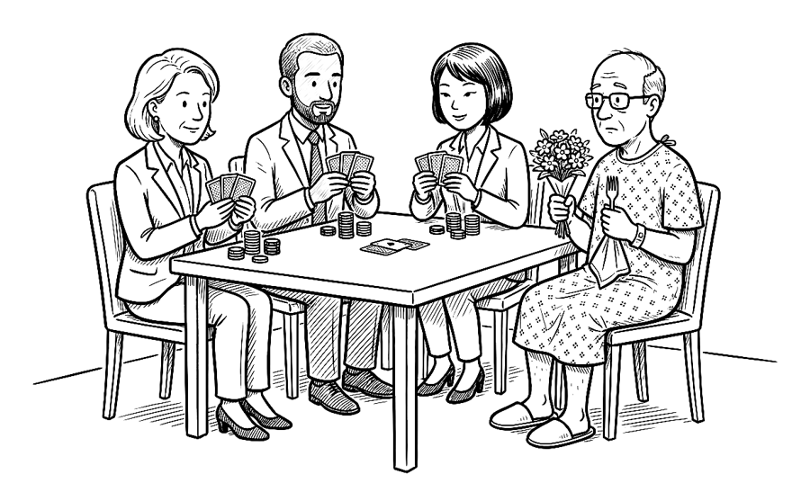
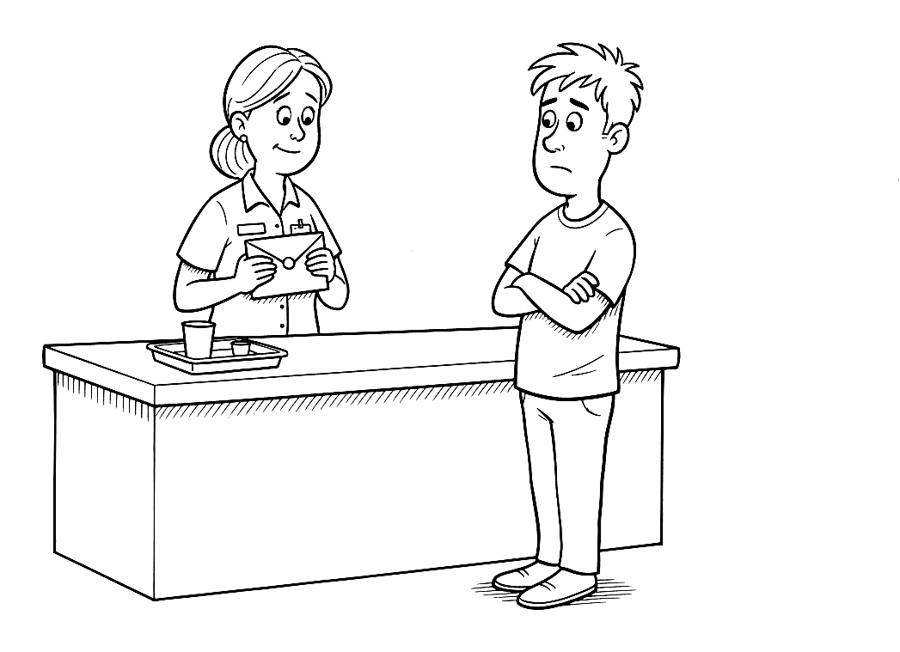
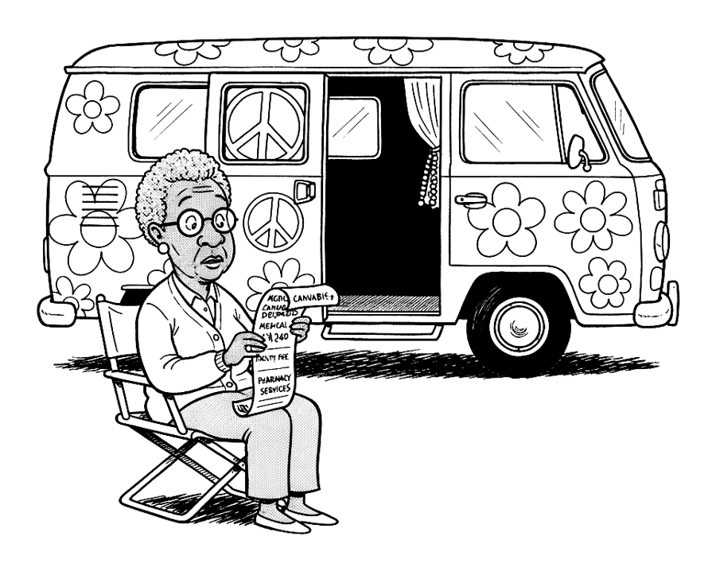
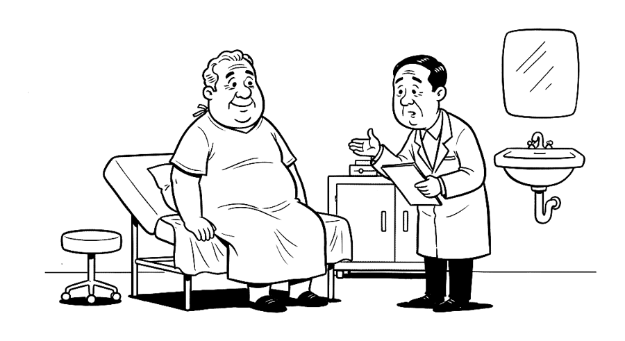

You have a part to play in your own care. Scripts included.
Nobody taught you how to use health care. You're told to stay out of the emergency room, not where to go instead. In front of a physician you may be asked what you'd like to do, a question it took a dozen years of training to be qualified to ask, and you have moments to answer.
Health care is two things at once. One is the people who care for you, who mostly want what you want. The other runs like any industry, and much of its money pays people you never meet to decide what you use and what you pay: the reviewer who decides whether care was necessary, the coder who decides what your visit was, the collector who decides how many times you'll be asked. They negotiate for a living. This book teaches you to negotiate with the negotiators, and to get the best from the people who care for you while giving them yours.

“I'm all in.”
The rights exist, and they go unused. The book collects them, says how you'd know when something is wrong, and for each sign gives you the sentence to say: to a doctor, a billing office, an insurer, a pharmacist. Most of the time nothing is wrong, and the book says that too.
Eight things from the book
Each is a finding from the book, in brief, with the sentence it gives you to use. The book carries the sources, the exceptions, and what to do when the first sentence doesn't work.
1Don't pay the first bill.
A hospital bill arrives as totals. Ask for the itemized bill and wait for your insurer's explanation of benefits before paying anything. In a national survey, people who called about a bill they thought was wrong got it corrected about three times in four. Of those who didn't call, 86 percent assumed it wouldn't help.
Say this“I've received the bill for [date]. Before I pay anything, I'd like the itemized statement with the procedure codes, and your financial assistance policy and application.”
In the book: Chapter 3, The Bill After, and the Debt
2A tax-exempt hospital must offer to cut the bill.
Every non-profit hospital has a written policy for reducing the bills of patients who can't pay, and you have 240 days from the first bill to apply. About three in ten of the patients it was written for ever get it. Half say the hospital never mentioned it.
In the book: Chapter 3, The Bill After, and the Debt

“Before we go over the bill, can you confirm that you're taking something for anxiety?”
3A denial is a first offer.
Medicare Advantage plans denied about four million requests for care in 2024. About one in nine was appealed, and 80.7 percent of those appeals were overturned in full or in part. The appeal starts with a request for the file the plan used.
Say this“Under 29 CFR 2560.503-1 I request, free of charge, the complete claim file, the specific clinical criteria or guideline relied on, the clinical rationale, and the name and specialty of any medical professional consulted.”
In the book: Chapter 28, No: Who Decides, and How to Appeal
4Your chart is yours, in thirty days.
The federal right of access gives you your whole record, in electronic form, within thirty days, for no more than the cost of copying. Results now reach your portal before your doctor has read them.
Say this“I'm requesting a copy of my complete designated record set under the HIPAA right of access, in electronic form, within thirty days.”
In the book: Chapter 8, Your Records Are Yours

“My dealer never charged a facility fee.”
5Ask for risk in people, not percentages.
A drug that lowers a risk from 3 in 100 to 2 in 100 cuts it by a third, which sounds like a lot. It also means a hundred people take it for one to benefit. Both descriptions are true, and only one tells you what you're choosing.
Say this“Out of a hundred people like me, how many have this happen without the treatment, and how many with it? Over how many years? And how many have the side effect?”
In the book: Chapter 12, Risk in Plain Numbers
6Doctors' estimates of time left run long.
Asked how long hospice patients would live, doctors were too hopeful in 63 predictions out of 100 and too gloomy in 17. On average they overestimated fivefold. The useful question asks for a range, not a number.
Say this“What's the best case, the worst case, and the most likely, for someone like me?”
In the book: Chapter 13, How Long Have I Got?

“Actually, that is my second opinion. When you first came in I thought you had gout.”
7“Your insurance won't pay if you leave” is a myth.
Seven residents in ten at one teaching hospital believed insurers refuse to pay when a patient leaves against advice, and most who told patients so said it to make them stay. Ten years of that hospital's billing records showed no payment refused because a patient left.
In the book: Chapter 20, Getting Out, and Getting Better at Home
8A salesperson is usually in the operating room.
When a device goes in, a representative of its maker is often in the room: shoulder surgeons, asked to count, said about four cases in five. The rep is paid on what is used. No state requires your consent, and you can still say no.
Say this“Please note in the chart that I'd like the representative to stay outside the sterile field.”
Every letter in the book as plain text to copy: records requests, itemized bills, financial assistance, appeals and external review, debt validation, the checks before a planned procedure, and four advance directives.
Chatbot prompts to paste, led by one that sets a chatbot up to keep your health file, draft your records requests, check your network and set your reminders.
What the book got wrong, once it's found, and what changed.
What's inside
Your Part to Play
1The Biggest Purchase You Never PricedWhy health care is the largest thing you buy, who is already paid to help you, and the questions to ask before any treatment.
2Simple Things That Will Extend Your LifeTen jobs of a few minutes each that pay off the first time something goes wrong, and the cheap, known things that add years.
3The Bill After, and the DebtHow to read a bill, get it cut or forgiven, and deal with collectors, lawsuits and medical debt.
4The Manners, and When to Break ThemHow to be kind to the people and firm with the institution, and how to ask so that asking works.
The Doctor and the Visit
5Which Door: From Telehealth to the ERWhich door to use, from 911 to telehealth, what each one costs, and what to say in the emergency waiting room.
6A Doctor of Your OwnHow to find a regular doctor, get in sooner, check their record, and leave when you want to.
7The VisitWhat to do before, during and after a visit so the minutes go to what matters, and how to keep a record of what was said.
8Your Records Are YoursHow to get your whole chart within thirty days at cost, correct what's wrong, and carry your history to a new doctor.
9Dr. Google, Dr. ChatbotHow to use search and chatbots well: the history to give, the questions to ask, and how to keep it private.
10Bringing BackupWho to bring, how to record the visit, which forms to sign while you're well, and who pays the helpers.
Decisions
11What Else Could This Be?Three questions that keep a diagnosis open, how to chase a result, and when a second opinion is worth getting.
12Risk in Plain NumbersHow to turn any risk into people out of a hundred, set it beside an ordinary day, and spot a number that only looks exact.
13How Long Have I Got?How to ask for the shape of a prognosis, why the odds improve as you go, and why doctors' estimates run long.
14The Test You May Not NeedHow to weigh a screening test by the lives it saves and the harms it causes, what "probably benign" means in numbers, and what to do about the thing a scan found by accident.
15Before You Say YesHow to see every option, including doing nothing, what to ask before agreeing to a treatment, and what a clinical trial can and can't do for you.
16What the Other Side Is Paid ForHow to look up what your doctor is paid by industry and what they own, and what that does and doesn't mean for you.
Surgery and the Hospital
17Before the OperationThe questions that choose a surgeon and a hospital, and what to settle before the day: medicines, who operates, the rep in the room, pain and clots.
18The First Day in HospitalWhat you sign on arrival, whether you've been admitted or only observed, and who is in charge of your care.
19Staying Safe in the HospitalHow to stay safe in hospital: checking every drug, meeting the team, calling for help, and leaving no weaker than you came.
20Getting Out, and Getting Better at HomeHow to leave with the medicines, the plan and a number to call, and how to appeal a discharge on Medicare.
21When Something Goes WrongWhat to do in the first week after something goes wrong: the record, the diary, the meeting and the deadlines.
Living With It
22Your Medicines, SafelyOne list, one bag of bottles, the drugs that do the most harm, what to check before an over-the-counter pill, and fevers.
23A Serious Diagnosis, and the Long HaulThe first two weeks after a serious diagnosis, then living with a condition that stays: the second read, the markers, the tumour board, one person holding the list, and the kidney tests.
24Who Gets BelievedWho gets believed and why, what men lose by staying away, and four things that work whoever says them.
25Pain, Addiction and the MindHow a prescriber sees you, what the opioid guideline does and doesn't require, and getting mental-health care through a thin network: parity, 988 and choosing a therapist.
26Pregnancy, Birth and Your KidsChoosing where to give birth, support in labour, adding the baby, the year after, and a child's shots, medicine cabinet, anaesthesia, school and the forms at eighteen.
27Your Parents, and the EndCaring for a parent and planning the end: the papers to sign early, the hospital stay, what Medicare won't pay for, what CPR does, hospice, and the funeral home's prices.
The Money
28No: Who Decides, and How to AppealWho decides what's covered, the six rungs of an appeal, and why most people who appeal win something.
29The Price BeforeHow to price care before you get it: the codes, the cash price, the facility fee and the written estimate.
30Drugs for LessHow to pay less at the pharmacy: cash prices, older drugs, coupons, and what the pharmacist can do.
31Things You've Already Paid ForThe free preventive care, the extras your employer bought, and how to use the rest of the year once you've hit the maximum.
32Getting SeenWhat to do when the directory is wrong, the wait is long, the bill is a surprise, or your doctor leaves the network.
33Your Plan: Which Rulebook, and Choosing Next Year'sWhich of nine rulebooks governs your coverage, and the subtraction that chooses next year's plan.
34Between Plans, On Your Own, and at Sixty-FiveCoverage when it changes: COBRA, the marketplace, Medicaid's reach back, and the Medicare decisions that are hard to undo.
Why It's This Way
35Where the Money GoesWhere the money goes, who is getting rich, and what a patient can do about it.
36How Everyone Else Does It, and What to Ask ForHow other rich countries trade bills for waits, and how patients change the rules here.
Ten appendices: your rights in full, twelve letters, advance directives and the checks before a procedure, the chatbot prompts, a glossary, where to turn, a guide to the papers you'll be handed, step-by-step instructions, questions for an employer's plan, and how the book was made.
Is it for you?
Probably, if
You've paid a medical bill without reading it. You've nodded at something a doctor said and not asked again. You've been told no by an insurer and taken it. You're turning 65, having a baby, holding a diagnosis, or caring for someone who is. Or you're well, insured, paying for it, and not using it.
Probably not, if
You want to be told what treatment to have; the book describes evidence and recommends nothing. You want a case for or against a particular health system; it takes the system as it is on the day you're in it. You want a villain; it doesn't supply one.
Forthcoming, 2027. This page will carry the buy link when there is one. The book describes how health care generally works; it isn't medical or legal advice, and no clinician or lawyer has reviewed it.